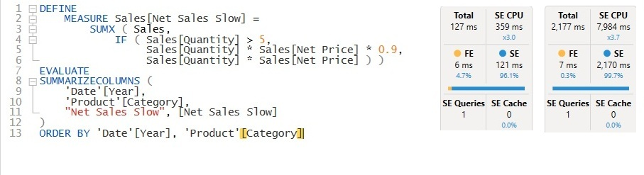
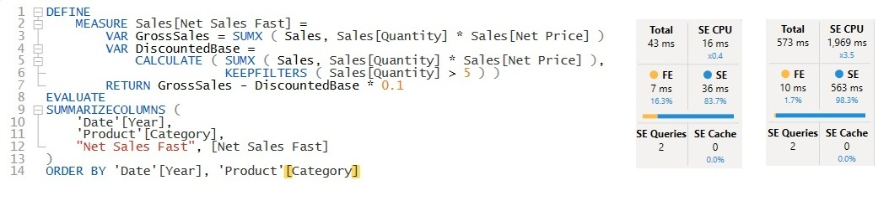
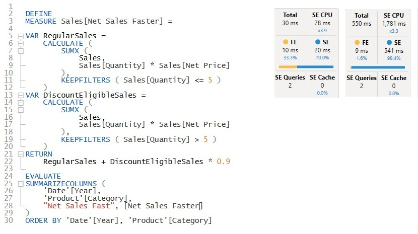

Contoso · Page 1 of 3
Speed: 10M vs 100M dataset
Each measure runs in DAX Studio grouped by Year and Product Category. In each screenshot, the Server Timings for the 10M dataset are on the left and for the 100M dataset on the right.
| Measure | 10M total | 100M total | 100M SE CPU | SE queries | vs. Slow (100M) |
|---|---|---|---|---|---|
| Net Sales Slow | 127 ms | 2,177 ms | 7,984 ms | 1 | baseline |
| Net Sales Fast | 43 ms | 573 ms | 1,969 ms | 2 | 3.8x faster |
| Net Sales Faster | 30 ms | 550 ms | 1,781 ms | 2 | 4.0x faster |
Net Sales Slow original

Total time rises from 127 ms to 2,177 ms (17x). There's only one storage engine query, but its CPU time reaches 7,984 ms on 100M rows. The IF inside SUMX can't be resolved as a plain column scan, so the condition is evaluated row by row during the scan. Formula engine time stays at 6 to 7 ms because that row-by-row work is counted inside the storage engine query. The cost grows with every additional sales row.
Net Sales Fast rewrite 1

Total time rises from 43 ms to 573 ms. The measure calculates gross sales, then subtracts 10% of the sales with Quantity > 5. That takes two simple storage engine queries, and the quantity condition becomes a filter the engine handles natively. On 100M rows, SE CPU is 1,969 ms, about 4x less than the original.
Show measure
Net Sales Fast =
VAR GrossSales = SUMX ( Sales, Sales[Quantity] * Sales[Net Price] )
VAR DiscountedBase =
CALCULATE ( SUMX ( Sales, Sales[Quantity] * Sales[Net Price] ),
KEEPFILTERS ( Sales[Quantity] > 5 ) )
RETURN GrossSales - DiscountedBase * 0.1
Net Sales Faster rewrite 2

Total time rises from 30 ms to 550 ms. This version splits sales into regular (Quantity ≤ 5) and discount-eligible (Quantity > 5) and applies the 0.9 factor once. It also uses two storage engine queries, and the timings are within about 5% of Net Sales Fast, which is run-to-run noise. Different DAX, essentially the same work for the engine.
Show measure
Net Sales Faster =
VAR RegularSales =
CALCULATE ( SUMX ( Sales, Sales[Quantity] * Sales[Net Price] ),
KEEPFILTERS ( Sales[Quantity] <= 5 ) )
VAR DiscountEligibleSales =
CALCULATE ( SUMX ( Sales, Sales[Quantity] * Sales[Net Price] ),
KEEPFILTERS ( Sales[Quantity] > 5 ) )
RETURN RegularSales + DiscountEligibleSales * 0.9
Summary
- Both rewrites are about 4x faster on 100M rows (2,177 ms → 550 to 573 ms), with 4 to 4.5x less storage engine CPU.
- The gain comes from removing the row-by-row
IF. Turning the condition into a filter lets the storage engine do plain, parallel column scans. - Once the work is in the storage engine, further tuning adds little. Fast and Faster are effectively equal, so it's a good point to stop optimizing the DAX.
- All versions scale reasonably. The data grew about 22x (10M → 225M+ rows) and query times grew 13 to 18x. But at 100M rows, the original costs over 2 seconds for a small Year × Category table, and that cost lands on every visual that uses it.